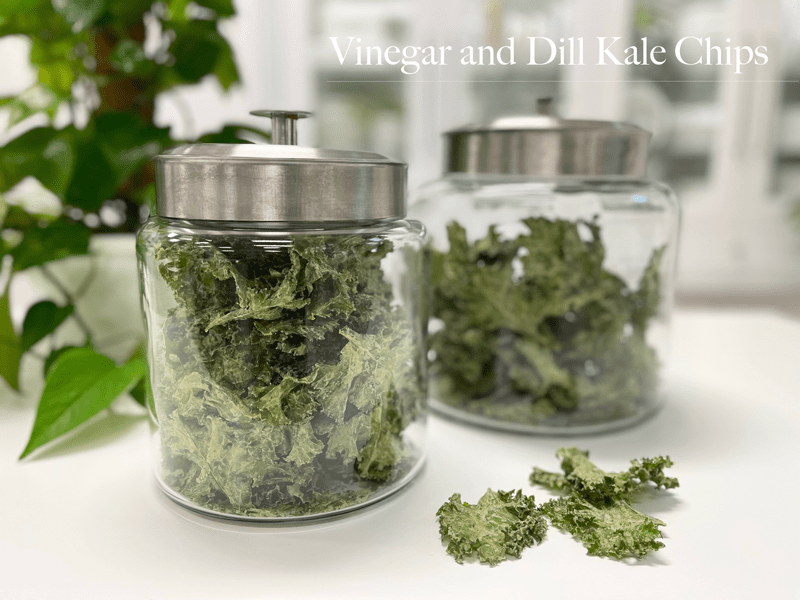

Vinegar and Dill Kale Chips
Today’s kitchen creation was inspired by my spice cabinet and our dear friend Gina. I first turned her on to kale chips a few years ago, and you can still read the shock on her face when she talks about how it was the almighty kale chip that started her on the path of eating healthy greens. So, as soon as I found out she was coming to stay with us, I knew that I had to make some.

As I was creating the sauce for the chips, I asked Gina if she liked dill. Of course, I ask this after I poured it into the blender with all of the other ingredients. She sort of wrinkled her face…oh dear…but she was willing to give it a try. I had Bob and Gina taste test the sauce to see if they approved and Gina’s eyes lit up and asked when they would be done. Guess she likes dill now too. haha
Dill is a unique plant in that both its leaves and seeds are used as seasonings. The green leaves are wispy and fernlike and have a soft, sweet taste. Dried dill seeds are light brown in color, oval in shape, and have one flat side and one convex ridged side. The seeds are similar in taste to caraway, with a flavor that is aromatic, sweet and citrusy, but also slightly bitter.
I just learned that dill is an anti-bacterial spice. Dill oil has been studied for its ability to prevent bacterial overgrowth. In this respect, dill shares the stage with garlic, which has also been shown to have “bacteriostatic” or bacteria-regulating effects. I found this fascinating.
I am still learning so much about spices, not only does it tickle me to watch my own progression in learning to use them but it fascinates me to learn just how healthy so many spices are. In the past years, I would only give thought to whole foods as having nutrients. I never even entertained the idea that a pinch of a spice could enhance the health benefits of a dish. Call me a late bloomer, but none the less, I am getting there. :)
 Ingredients:
Ingredients:
yields 3 cups sauce
- 2 cups raw cashews, soaked 2+ hours
- 3/4 cup water
- 1/4 cup raw apple cider vinegar
- 2 Tbsp lemon juice
- 3 Tbsp dried dill
- 2 Tbsp dried chives
- 1 1/2 tsp black peppercorns (fresh ground)
- 1 1/2 tsp Himalayan pink salt
- 1 head (8oz) curly kale, organic
- Selecting Kale:
- Don’t use wilted / old kale; it can have a bitter undertone.
- I prefer Curly Kale because all of the folds really hold onto the sauce.
- Wash and de-stem your kale.
- Start by washing the kale and blotting it dry. You can also use a salad spinner if you own one.
- Make sure you get as much excess water off of the kale as possible. If you don’t, it will make your sauce “soupy.” Set aside.
- Starting at the bottom strip away the leaf leaving behind only the stem.
- Tear the remaining leaves into pieces that are a tad larger than bite-size since they tend to shrink.
Sauce Prep:
- After soaking the cashews, drain and discard the water.
- In a high-powered blender combine the; cashews, water, vinegar, lemon juice, and spices. Blend until the sauce is creamy smooth.
- Due to the volume and the creamy texture that we are going after, it is important to use a high-powered blender. It could be too taxing on a lower-end model.
- Create a vortex in the blender; this will help ensure that the sauce is getting fully blended into a creamy texture.
- What is a vortex? Look into the container from the top and slowly increase the speed from low to high, the batter will form a small vortex (or hole) in the center. High-powered machines have containers that are designed to create a controlled vortex, systematically folding ingredients back to the blades for smoother blends and faster processing… instead of just spinning ingredients around, hoping they find their way to the blades.
- If your machine isn’t powerful enough or built to do this, you may need to stop the unit often to scrape down the sides.
- This process can take 1-3 minutes, depending on the strength of the blender. Keep your hand cupped around the base of the blender carafe to feel for warmth. If the batter is getting too warm., stop the machine and let it cool, then proceed once cooled.
Assembly:
- Place the torn kale into a very large bowl.
- Pour tin the sauce and with your hands gently and evenly coat each piece of kale.
- This is a “hands-on” job. Stirring with a spoon just doesn’t do the trick.
- I would suggest removing any jewelry from your fingers. I have temporarily lost a ring here and there.
Dehydrator Method:
- Have the dehydrator trays ready by lining them with non-stick teflex or parchment paper.
- Don’t use wax paper because food tends to stick to it.
- Spread all the trays out in advance because soon your hands will be covered in sauce and you don’t want to get it all over.
- I used 3 Excalibur dehydrator trays.
- Place the kale on the non-stick sheets. You can do this 1 of 2 ways:
- Lay each piece out semi-flat if you want to create individual pieces. More time-consuming and chips tend to a be a little bit more fragile.
- Or, drop clumps of coated kale on the sheets. This will create hardy clusters that are loaded with sauce and flavor. This is my preference.
- Dehydrate at 115 degrees (F) for about 6-8 hrs or until dry.
- I tend to pull mine out before it gets 100% dry because I like it a little chewy.
- The dry time is just an estimate. The climate, humidity, dehydrator and how full the machine is can all affect how long it will take to dry.
- Store in an airtight glass container and be ready to nibble non-stop till the last crumb is gone!
- If the kale chips start taking on some humidity from the house, you can place them back into the dehydrator for a few hours at 115 degrees (F).
Oven Method:
- Please use as a guide and closely monitor the kale chips as they cook.
- Preheat the oven to 300 degrees (F), anything higher and risk burning the chips.
- Line the baking sheet with parchment paper and place the kale chips on the baking sheet in a single layer.
- Bake for 10 minutes, rotate the pan and bake for another 15 minutes.
- The bake times will vary based on your oven, but it’s a good starting off point!
- Once you pull the tray from the oven, allow the chips to cool on the baking sheet.
- Store in an airtight glass container and be ready to nibble non-stop till the last crumb is gone!
© AmieSue.com